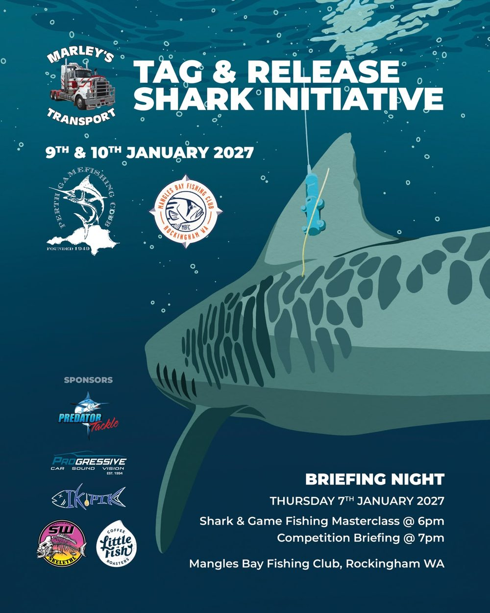

Perth Game Fishing Club & Mangles Bay Fishing Club
Tag & Release Shark Initiative
- 9–10 January 2027
- Mangles Bay, Rockingham
An early-season tag-and-release shark competition. Briefing night Thursday 7 January 2027 at Mangles Bay Fishing Club: Shark & Game Fishing Masterclass at 6pm, competition briefing at 7pm.
Club details 9–10 Jan